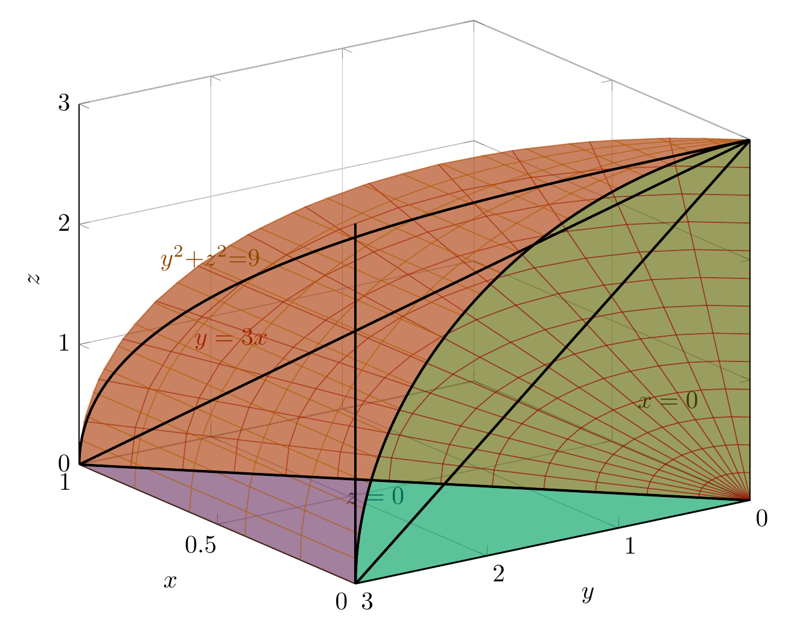
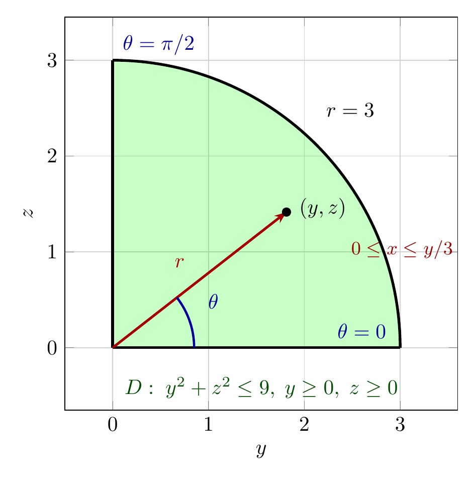

Please solve the problem in the following image.
(Image `20260927_231146_155425_utc_0800_0.png`. Alt text: Image: human_20260927_231146_155425_utc_0800)
20260927_231146_155425_utc_0800_0.png
End of problem
Answer
## Problem
Evaluate $\displaystyle\iiint_E z\,dV$, where $E$ is bounded by the cylinder $y^2+z^2=9$ and the planes $x=0$, $y=3x$, and $z=0$ in the first octant.
---
## Step 1 — Understand the solid
The key observation is that **the cylinder $y^2+z^2=9$ has no $x$ in its equation**, so its axis is the $x$-axis: it is a tube running parallel to $x$. Its cross-section perpendicular to the $x$-axis is the circle of radius $3$ in the $yz$-plane.
The four bounding surfaces are therefore:
| Surface | Role |
|---|---|
| $y^2+z^2=9$ | curved "roof/wall" — the round cap in the $yz$-directions |
| $z=0$ | flat bottom (the $xy$-plane) |
| $x=0$ | the back wall (the $yz$-plane) — a **quarter disk** of radius $3$ |
| $y=3x$ | the slanted side wall, i.e. $x=y/3$ |
Inside the first octant ($x\ge 0,\;y\ge 0,\;z\ge 0$), the solid sits between $x=0$ and $x=y/3$, and its shadow in the $yz$-plane is the quarter disk $y^2+z^2\le 9,\;y\ge0,\;z\ge0$.
So the cleanest description is **integrate in $x$ first**, then over the quarter disk:
$$
E=\left\{(x,y,z)\;:\;0\le y\le 3,\quad 0\le z\le \sqrt{9-y^2},\quad 0\le x\le \tfrac{y}{3}\right\}
$$
Note the corner points: the slanted plane $y=3x$ meets the cylinder at $(x,y,z)=(1,3,0)$, so $0\le x\le 1$ overall.
---
\documentclass[border=8pt]{standalone}
\usepackage{pgfplots}
\pgfplotsset{compat=1.18, trig format plots=deg}
\begin{document}
\begin{tikzpicture}
\begin{axis}[
width=11cm, height=9.5cm,
view={-125}{22},
xlabel={$x$}, ylabel={$y$}, zlabel={$z$},
xmin=0,xmax=1, ymin=0,ymax=3, zmin=0,zmax=3,
xtick={0,0.5,1}, ytick={0,1,2,3}, ztick={0,1,2,3},
grid=major,
]
% ---- face z = 0 : triangle (0,0)-(0,3)-(1,3) ----
\addplot3[fill=blue, opacity=0.40, draw=black, line width=0.7pt]
coordinates {(0,0,0) (0,3,0) (1,3,0) (0,0,0)};
\node[blue!55!black, font=\bfseries] at (axis cs:0.62,1.55,-0.22) {$z=0$};
% ---- face x = 0 : quarter disk in the yz-plane ----
\addplot3[fill=green, opacity=0.40, draw=none] coordinates {
(0,0,0) (0,3.0000,0.0000) (0,2.9959,0.1570) (0,2.9836,0.3136)
(0,2.9631,0.4693) (0,2.9344,0.6237) (0,2.8978,0.7765)
(0,2.8532,0.9271) (0,2.8007,1.0751) (0,2.7406,1.2202)
(0,2.6730,1.3620) (0,2.5981,1.5000) (0,2.5160,1.6339)
(0,2.4271,1.7634) (0,2.3314,1.8880) (0,2.2294,2.0074)
(0,2.1213,2.1213) (0,2.0074,2.2294) (0,1.8880,2.3314)
(0,1.7634,2.4271) (0,1.6339,2.5160) (0,1.5000,2.5981)
(0,1.3620,2.6730) (0,1.2202,2.7406) (0,1.0751,2.8007)
(0,0.9271,2.8532) (0,0.7765,2.8978) (0,0.6237,2.9344)
(0,0.4693,2.9631) (0,0.3136,2.9836) (0,0.1570,2.9959)
(0,0.0000,3.0000) (0,0,0)};
\node[green!35!black, font=\bfseries] at (axis cs:-0.25,1.15,1.35) {$x=0$};
% ---- face y = 3x (i.e. x = y/3), ruled over the quarter disk ----
\addplot3[surf, domain=0:3, y domain=0:90, samples=14, samples y=14,
opacity=0.38, shader=flat, color=red!60!black]
({(x*cos(y))/3}, {x*cos(y)}, {x*sin(y)});
\node[red!60!black, font=\bfseries] at (axis cs:0.95,1.95,0.85) {$y=3x$};
% ---- cylindrical face y^2+z^2 = 9 , 0 <= x <= y/3 ----
\addplot3[surf, domain=0:90, y domain=0:1, samples=24, samples y=6,
opacity=0.38, shader=flat, color=orange!70!black]
({y*cos(x)}, {3*cos(x)}, {3*sin(x)});
\node[orange!55!black, font=\bfseries] at (axis cs:0.55,2.95,2.15) {$y^2{+}z^2{=}9$};
% ---- key straight edges ----
\addplot3[black, line width=1.0pt] coordinates {(0,0,0) (0,3,0)};
\addplot3[black, line width=1.0pt] coordinates {(0,0,0) (1,3,0)};
\addplot3[black, line width=1.0pt] coordinates {(0,3,0) (0,3,3)};
\addplot3[black, line width=1.0pt] coordinates {(0,0,0) (0,0,3)};
% ---- quarter circle on x = 0 ----
\addplot3[black, line width=1.0pt, domain=0:90, samples=60]
(0, {3*cos(x)}, {3*sin(x)});
% ---- curve where y = 3x meets the cylinder ----
\addplot3[black, dashed, line width=1.0pt, domain=0:90, samples=60]
({(cos(x))^2}, {3*cos(x)}, {3*sin(x)});
\end{axis}
\end{tikzpicture}
\end{document}

pgfplots_0.png
---
*(The green face is the quarter disk $x=0$, the blue face is the triangular bottom $z=0$, the red face is the slanted wall $y=3x$, and the orange face is the curved cylinder. The dashed curve is where $y=3x$ meets $y^2+z^2=9$.)*
---
## Step 2 — Set up the iterated integral and do the $x$-integration first
$$
\iiint_E z\,dV=\int_0^3\!\int_0^{\sqrt{9-y^2}}\!\int_0^{y/3} z\;dx\,dz\,dy
$$
Since the integrand $z$ does not contain $x$, the innermost integral is just $z\times(\text{length of the }x\text{-interval})$:
$$
\int_0^{y/3} z\,dx=z\cdot x\Big|_0^{y/3}=\frac{y\,z}{3}
$$
This is the geometric meaning: at each point $(y,z)$ of the quarter disk, the solid has thickness $y/3$ in the $x$-direction, and we multiply the height $z$ by that thickness. Hence
$$
\iiint_E z\,dV=\frac{1}{3}\iint_D y\,z\,dA,\qquad D=\{\,y^2+z^2\le 9,\;y\ge0,\;z\ge0\,\}
$$
The remaining double integral is over a **disk**, so polar coordinates in the $yz$-plane are the natural tool.
---
\documentclass[border=8pt]{standalone}
\usepackage{pgfplots}
\usetikzlibrary{arrows.meta}
\pgfplotsset{compat=1.18, trig format plots=deg}
\begin{document}
\begin{tikzpicture}
\begin{axis}[
width=8.2cm, height=8.2cm, axis equal,
xlabel={$y$}, ylabel={$z$},
xmin=-0.5,xmax=3.6, ymin=-0.6,ymax=3.4,
xtick={0,1,2,3}, ytick={0,1,2,3},
grid=major, grid style={gray!35},
]
% ---- quarter disk D (filled, dense polygon) ----
\addplot[fill=green, opacity=0.22, draw=none] coordinates {
(0,0) (3.0000,0.0000) (2.9990,0.0785) (2.9959,0.1570) (2.9908,0.2354)
(2.9836,0.3136) (2.9743,0.3916) (2.9631,0.4693) (2.9498,0.5467)
(2.9344,0.6237) (2.9171,0.7003) (2.8978,0.7765) (2.8765,0.8520)
(2.8532,0.9271) (2.8279,1.0014) (2.8007,1.0751) (2.7716,1.1481)
(2.7406,1.2202) (2.7078,1.2915) (2.6730,1.3620) (2.6365,1.4315)
(2.5981,1.5000) (2.5579,1.5675) (2.5160,1.6339) (2.4724,1.6992)
(2.4271,1.7634) (2.3801,1.8263) (2.3314,1.8880) (2.2812,1.9483)
(2.2294,2.0074) (2.1761,2.0651) (2.1213,2.1213) (2.0651,2.1761)
(2.0074,2.2294) (1.9483,2.2812) (1.8880,2.3314) (1.8263,2.3801)
(1.7634,2.4271) (1.6992,2.4724) (1.6339,2.5160) (1.5675,2.5579)
(1.5000,2.5981) (1.4315,2.6365) (1.3620,2.6730) (1.2915,2.7078)
(1.2202,2.7406) (1.1481,2.7716) (1.0751,2.8007) (1.0014,2.8279)
(0.9271,2.8532) (0.8520,2.8765) (0.7765,2.8978) (0.7003,2.9171)
(0.6237,2.9344) (0.5467,2.9498) (0.4693,2.9631) (0.3916,2.9743)
(0.3136,2.9836) (0.2354,2.9908) (0.1570,2.9959) (0.0785,2.9990)
(0.0000,3.0000) (0,0)};
% ---- boundary of D ----
\addplot[black, line width=1.3pt, domain=0:90, samples=80] ({3*cos(x)}, {3*sin(x)});
\addplot[black, line width=1.3pt] coordinates {(0,0) (3,0)};
\addplot[black, line width=1.3pt] coordinates {(0,0) (0,3)};
% ---- sample polar ray to the point (y,z) ----
\addplot[-{Stealth[length=2mm]}, red!65!black, line width=1.2pt]
coordinates {(0,0) (1.8137,1.4153)};
\addplot[blue!60!black, line width=1.1pt, domain=0:38, samples=40]
({0.85*cos(x)}, {0.85*sin(x)});
\node[blue!60!black, font=\bfseries] at (axis cs:1.05,0.48) {$\theta$};
\node[red!65!black, font=\bfseries] at (axis cs:0.70,0.88) {$r$};
\addplot[only marks, mark=*, mark size=2pt, black] coordinates {(1.8137,1.4153)};
\node[black, anchor=west] at (axis cs:1.87,1.45) {$(y,z)$};
% ---- annotations ----
\node[green!30!black, font=\bfseries] at (axis cs:1.55,-0.42)
{$D:\;y^2+z^2\le 9,\;y\ge 0,\;z\ge 0$};
\node[black] at (axis cs:2.48,2.48) {$r=3$};
\node[blue!60!black] at (axis cs:0.48,3.16) {$\theta=\pi/2$};
\node[blue!60!black] at (axis cs:2.60,0.17) {$\theta=0$};
\node[red!60!black, align=center, font=\small] at (axis cs:3.02,1.02)
{$0\le x\le y/3$};
\end{axis}
\end{tikzpicture}
\end{document}

pgfplots_1.png
---
*(Left/right picture: the projection $D$ of $E$ onto the $yz$-plane, with the polar angle $\theta$ now measured from the $y$-axis toward the $z$-axis.)*
---
## Step 3 — Polar coordinates in the $yz$-plane
Set
$$
y=r\cos\theta,\qquad z=r\sin\theta,\qquad dA=r\,dr\,d\theta
$$
with
$$
0\le r\le 3,\qquad 0\le\theta\le\frac{\pi}{2}\quad(\text{first quadrant of the }yz\text{-plane}).
$$
Then $y\,z=(r\cos\theta)(r\sin\theta)=r^2\sin\theta\cos\theta$, so
$$
\frac{1}{3}\iint_D y\,z\,dA=\frac{1}{3}\int_0^{\pi/2}\!\int_0^{3} r^2\sin\theta\cos\theta\cdot r\,dr\,d\theta=\frac{1}{3}\int_0^{\pi/2}\sin\theta\cos\theta\,d\theta\int_0^{3}r^3\,dr
$$
The region is a rectangle in $(r,\theta)$ and the integrand factors, so the double integral splits into a product of two single integrals.
**Radial factor:**
$$
\int_0^{3} r^3\,dr=\frac{r^4}{4}\Bigg|_0^{3}=\frac{81}{4}
$$
**Angular factor** (using $\sin\theta\cos\theta=\tfrac12\sin 2\theta$):
$$
\int_0^{\pi/2}\sin\theta\cos\theta\,d\theta=\frac12\int_0^{\pi/2}\sin 2\theta\,d\theta=\frac12\left(-\frac{\cos 2\theta}{2}\right)\Bigg|_0^{\pi/2}=\frac12\cdot\frac{1-(-1)}{2}=\frac{1}{2}
$$
**Combine:**
$$
\iiint_E z\,dV=\frac{1}{3}\cdot\frac{1}{2}\cdot\frac{81}{4}=\frac{81}{24}=\frac{27}{8}
$$
---
## Step 4 — Verification
Carrying out the integral in purely Cartesian form (no polar substitution) gives the same number:
$$
\frac{1}{3}\int_0^3\int_0^{\sqrt{9-y^2}}y\,z\,dz\,dy=\frac{1}{6}\int_0^3 y\left(9-y^2\right)dy=\frac{1}{6}\left[\frac{9y^2}{2}-\frac{y^4}{4}\right]_0^3=\frac{1}{6}\left(\frac{81}{2}-\frac{81}{4}\right)=\frac{1}{6}\cdot\frac{81}{4}=\frac{27}{8}\;\checkmark
$$
Numerically $27/8 = 3.375$; symbolic integration in three different orders and a Monte-Carlo estimate ($\approx 3.372$) all agree.
---
## Answer
$$
\boxed{\dfrac{27}{8}}
$$
**Takeaway for this kind of problem:** when a bounding cylinder is missing one variable (here $y^2+z^2=9$ has no $x$), take that variable as the *innermost* integration. The remaining region $D$ lives in the plane of the cylinder's cross-section, and if $D$ is a disk (or part of one), polar coordinates *in that plane* — here $y=r\cos\theta,\;z=r\sin\theta$ — turn the rest into a product of two easy one-variable integrals.